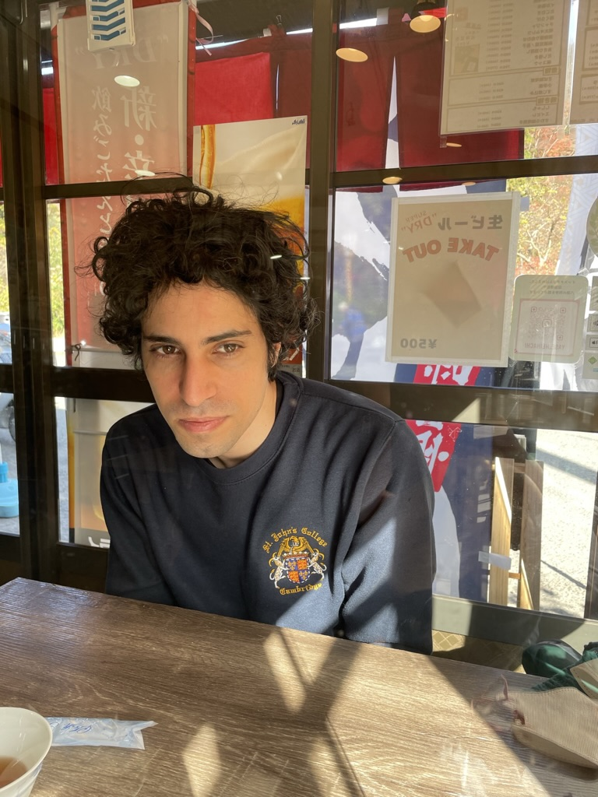

Yoàv Montacute (モンタキュート・ヨアフ)

PhD student, St John's College.
Department of Computer Science and Technology,
University of Cambridge.
Research focus: logic and foundations of mathematics, theory of computation, algorithms.
Academic interest: mathematical logic, finite model theory, category theory, topology, algebraic-topology, dynamical systems, graph theory.
News: I have been awarded the JST ACT-X research grant for the project titled AIにおける対称性:次世代AIのための組合せ位相的方法, covering the period 2024–2027.
During the academic year 2022/23, I was affiliated with The Alan Turing Institute as an Enrichment Student working on a research project related to logic and dynamical systems.
Research grants:
-
JST ACT-X. AIにおける対称性:次世代AIのための組合せ位相的方法. 2024-2027.
Conference publications:
-
Concurrent Games over Relational Structures: The Origin of Game Comonads. With Glynn Winskel.
39th Annual ACM/IEEE Symposium on Logic in Computer Science (LICS 2024).[Proceedings][ArXiv] -
Linear Arboreal Categories. With Samson Abramsky and Nihil Shah.
Proceedings of the 40th Conference on Mathematical Foundations of Programming Semantics (MFPS 2024).[Proceedings][ArXiv] -
Dynamic Tangled Derivative Logic of Metric Spaces. With David Fernández-Duque.
38th Conference on Artificial Intelligence (AAAI 2024). [Proceedings] [ArXiv] -
Untangled: A Complete Dynamic Topological Logic. With David Fernández-Duque.
37th Conference on Artificial Intelligence (AAAI 2023). [Proceedings][ArXiv] -
Cantor Derivative Logic in Topological Dynamics (short paper).
14th Conference on Advances in Modal Logic (AiML 2022). [Booklet][ArXiv] -
The Pebble-Relation Comonad in Finite Model Theory. With Nihil Shah.
37th Annual ACM/IEEE Symposium on Logic in Computer Science (LICS 2022). Winner of the Kleene Award. [Proceedings][ArXiv] -
Dynamic Cantor Derivative Logic. With David Fernández-Duque.
30th EACSL Annual Conference on Computer Science Logic (CSL 2022). [Proceedings][ArXiv]
Journal publications:
-
The Pebble-Relation Comonad in Finite Model Theory. With Nihil Shah.
Logical Methods in Computer Science (LMCS), 20. [Journal] -
Dynamic Cantor Derivative Logic. With David Fernández-Duque.
Logical Methods in Computer Science (LMCS), 19. [Journal]
Selected talks:
-
CSCAT 2025 - 有限モデル理論における圏論的手法 (崇城大学).
-
LICS 2024 - Concurrent Games over Relational Structures (Taltech).
-
PPL 2024 - Untangled: A Complete Dynamic Topological Logic (Toki Messe).
-
AAAI 2024 - Dynamic Tangled Derivative Logic of Metric Spaces (Vancouver Convention Center).
-
Invited talk - Categorical Combinatorics and Topology (National Institute of Informatics).
-
Coresources 2023 - Computational Complexity and Model Comparison Games (University of Cambridge).
-
Invited talk - Logic and Dynamical Systems (University of Warsaw).
-
Invited talk - Generalising Model Comparison Games (University of Edinburgh).
-
AAAI 2023 - Untangled: A Complete Dynamic Topological Logic (Walter E. Washington Convention Center).
-
Invited talk - Game Comonads and Categorically Motivated Combinatorics (Kyoto University).
-
AiML 2022 - Cantor Derivative Logic in Topological Dynamics (IRISA).
-
LICS 2022 - The Pebble-Relation Comonad in Finite Model Theory (Technion).
-
Invited talk - Comonads in the Playground of Finite Models (University of East Anglia).
-
BCTCS 2022 - The Path of Hidden Pebbles (Swansea University).
-
CSL 2022 - Dynamic Cantor Derivative Logic (University of Göttingen)(Online).
-
NLPIR 2019 - Location and Category Detection in Twitter (Tokushima University).
Academic service:
-
Reviewer in: LICS, AIML, ICALP, MFCS, Journal of Philosophical Logic, Review of Symbolic Logic.
-
Organising and Programme Committee: Structure meets Power 2024, Structure meets Power 2023.
Academic visits:
-
鹿児島大学 (March 2025).
-
国立情報学研究所 (NII), Tokyo (Fall 2023).
-
University of Warsaw (April 2023).
-
University of Kyoto (December 2022).
Professional memberships:
-
Fellow of the Cambridge Philosophical Society (since 2021).
-
Member of the Association for Computing Machinery (ACM) (since 2022).
Supervising:
-
2024/25: Generalised Sokoban Algorithms.
(Part II Project (undergraduate dissertation), Computer Science, University of Cambridge). -
2023/24: Randomised Matching Algorithms.
(Part II Project (undergraduate dissertation), Computer Science, University of Cambridge). -
2022/23: Interdimensional Logic in Combinatorial Algebraic Topology.
(undergraduate dissertation, visiting student, Scuola Superiore IUSS). -
2022/23: Implementing and analysing Bulatov-Dalmau’s algorithm for CSPs with Mal’tsev constraints.
(Part II Project (undergraduate dissertation), Computer Science, University of Cambridge). -
2021/22: Geometric Representations of Hom-Complexes.
(Part II Project (undergraduate dissertation), Computer Science, University of Cambridge).
Teaching:
-
Easter 2024: Supervisor in Artificial Intelligence (Part IB, Computer Science, University of Cambridge).
-
Michaelmas 2023: Supervisor in Denotational Semantics (Part II, Computer Science, University of Cambridge).
-
Easter 2023: Supervisor in Hoare Logic and Model Checking (Part II, Computer Science, University of Cambridge).
-
Lent 2023: Supervisor in Computation Theory (Part IB, Computer Science, University of Cambridge).
-
Michaelmas 2022: Demonstrator in Category Theory (MPhil ACS/Part III/Part II, Computer Science, University of Cambridge).
-
Easter 2022: Supervisor in Complexity Theory (Part IB, Computer Science, University of Cambridge).
-
Lent 2022: Supervisor in Logic and Set Theory (Part II, Mathematical Tripos, University of Cambridge).
-
Lent 2022: Supervisor in Quantum Computing (Part II, Computer Science, University of Cambridge).
-
Michaelmas 2021: Supervisor in Algebraic Topology (Part II, Mathematical Tripos, University of Cambridge).
-
Easter 2021: Supervisor in Complexity Theory (Part IB, Computer Science, University of Cambridge).
-
Lent 2021: Supervisor in Logic and Proof (Part IB, Computer Science, University of Cambridge).
-
Spring 2020: TA in Topology, Logic and Learning (MSc in Logic, University of Amsterdam).